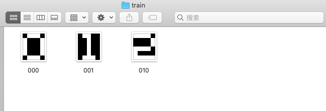
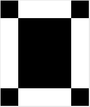
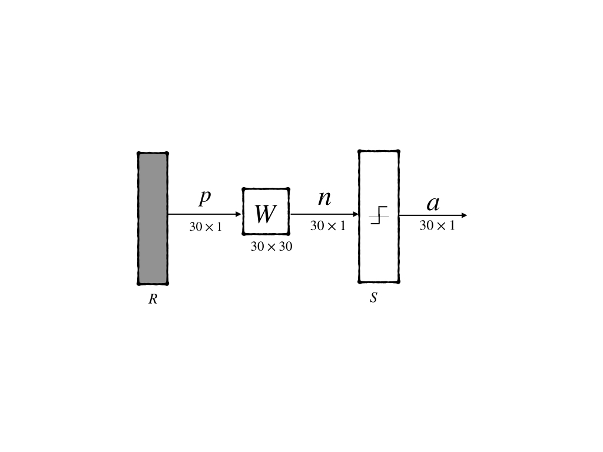

Supervised Hebbian Learning (Part I)
Keywords: Hebbian Learning, Supervised Hebbian Learning
Hebb Rule1
Hebb rule is one of the earliest neural network learning laws. It was published in 1949 by Donald O. Hebb, a Canadian psychologist, in his work 'The Organization of Behavior'. In this great book, he proposed a possible mechanism for synaptic modification in the brain. And this rule then was used in training the artificial neural network for pattern recognition.

A lot of linear algebra knowledge is used in this post.
'The Organization of Behavior'
The main premise of the book is that behavior could be explained by the action of neuron. This was a relatively different idea at that time when the dominant concept is the correlation between stimulus and response by psychologists. This could also be considered as a battle between 'top-down' philosophy and 'down-top' philosophy.
"When an axon of cell A is near enough to excite a cell B and repeatedly or persistently takes part in firing it, some growth process or metabolic change takes place in one or both cells such that A's efficiency, as one of the cells firing B, is increased"
This is a physical mechanism for learning at the cellular level. Dr. Hebb thought if two nerve cells were closed enough and they seemed related that was both of them fired simultaneously in high frequency. Then the connection between them would be strengthened. However, at that time, Dr. Hebb did not give firm evidence of his theory. The subsequent research in the next few years did prove the existence of this strengthening.
Hebb's postulate is not completely new, because some similar ideas had been proposed before. However, Dr. Hebb gave a more systematic postulate.
Linear Associator
The first use of Hebb's learning rule in artificial neural networks is a linear associator. Here is the simplest example of this neural network to illustrate the concept of Hebb's postulate. A more complex architecture may drag us into the mire and miss the key points of the learning rule itself.
Linear associator was proposed by James Anderson and Teuwo Kohonen in 1972 independently. And its abbreviated notation is:
This architecture consists of a layer of \(S\) neurons each of which has \(R\) inputs and the transfer functions of them are all linear functions. So the output of this architecture can be simply calculated:
\[ a_i=\sum_{j=1}^{R}w_{ij}p_j\tag{1} \]
where the \(i\)th component of the output vector is given by the summation of all inputs weighted by the weights of the connections between the input and the \(i\)th neuron. Or, it also can be written in a matrix form:
\[ \boldsymbol{a}=\boldsymbol{W}\boldsymbol{p}\tag{2} \]
Associative memory is to learn \(Q\) pairs of prototype input/output vectors:
\[ \{\boldsymbol{p}_1,\boldsymbol{t}_1\},\{\boldsymbol{p}_2,\boldsymbol{t}_2\},\cdots,\{\boldsymbol{p}_Q,\boldsymbol{t}_Q\}\tag{3} \]
then the associator will output \(\boldsymbol{a}=\boldsymbol{t}_i\) for \(i=1,2,\cdots Q\) crospending to input \(\boldsymbol{p}=\boldsymbol{p}_i\) for \(i=1,2,\cdots Q\). And when slight change of input occured(i.e. \(\boldsymbol{p}=\boldsymbol{p}_i+\delta\)), output should also change slightly( i.e. \(\boldsymbol{a}=\boldsymbol{t}_i+\varepsilon\)).
Review Hebb rule:"if neurons on both sides of the synapse are activated simutaneously, the strength of the synapse will encrease". And considering \(\boldsymbol{a}_i=\sum_{j=1}^{R}\boldsymbol{w}_{ij}\boldsymbol{p}_j\) where \(\boldsymbol{w}_{ij}\) is the weight between input \(\boldsymbol{p}_j\) and output \(\boldsymbol{a}_i\) so the mathematical Hebb rule is: \[ w_{ij}^{\text{new}} = w_{ij}^{\text{old}} + \alpha f_i(a_{iq}) g_j(p_{jq})\tag{4} \] where: - \(\boldsymbol{q}\): the identification of the neuron - \(\alpha\): learning rate
This mathematical model uses two function \(f\) and \(g\) to map raw input and output into suitable values and then multiply them as a increasement to the weight of connection. These two actual functions are not known for sure, so writing the functions as linear functions is also reasonable. Then we have the simplifyed form of Hebb's rule: \[ w_{ij}^{\text{new}} = w_{ij}^{\text{old}} + \alpha a_{iq} p_{jq} \tag{5} \]
A learning rate of \(\alpha\) is necessary. Because it can be used to control the process of update of weights.
The equation(5) does not only represent the Hebb's rule that the connection would increase when both sides of the synapses are active but also give author increment of connection when both sides of synapses are negative. This is an extension of Hebb's rule which may have no biological fact to support.
In this post, we talk about the only supervised learning of Hebb's rule. However, there is also an unsupervised version of Hebb's rule which will be investigated in another post. Recall that we have training set: \[ \{\boldsymbol{p}_1,\boldsymbol{t}_1\},\{\boldsymbol{p}_2,\boldsymbol{t}_2\},\cdots,\{\boldsymbol{p}_Q,\boldsymbol{t}_Q\}\tag{6} \] The Hebb's postulate states the relation between the outputs and the inputs. However, the outputs sometime are not the correct response to inputs in some task. And as we known, in supervised learning task correct outputs which is also called targets are given. So we replace the output of the model \(a_{iq}\) in equation(5) with the known correct output(target) \(t_{iq}\), so the supervised learning form of Hebb's rule is: \[ w_{ij}^{\text{new}} = w_{ij}^{\text{old}} + \alpha t_{iq} p_{jq} \tag{7} \]
where: - \(t_{iq}\) is the \(i\)th element of \(q\)th target \(\boldsymbol{t}_q\) - \(p_{jq}\) is the \(j\)th element of \(q\)th input \(\boldsymbol{p}_q\)
of course, it also has matrix form:
\[ \boldsymbol{W}^{\text{new}}=\boldsymbol{W}^{\text{old}}+\alpha\boldsymbol{t}_q\boldsymbol{p}_q^T\tag{8} \]
If we initial \(\boldsymbol{W}=\boldsymbol{0}\) , we would get the final weight matrix for the training set: \[ \boldsymbol{W}=\boldsymbol{t}_1\boldsymbol{p}_1^T+\boldsymbol{t}_2\boldsymbol{p}_2^T+\cdots+\boldsymbol{t}_Q\boldsymbol{p}_Q^T=\sum_{i=1}^{Q}\boldsymbol{t}_i\boldsymbol{p}_i^T\tag{9} \] or in a matrix form: \[ \boldsymbol{W}=\begin{bmatrix} \boldsymbol{t}_1,\boldsymbol{t}_2,\cdots,\boldsymbol{t}_Q \end{bmatrix}\begin{bmatrix} \boldsymbol{p}_1^T\\ \boldsymbol{p}_2^T\\ \vdots\\ \boldsymbol{p}_Q^T \end{bmatrix}=\boldsymbol{T}\boldsymbol{P}^T\tag{10} \]
Performance Analysis 2
Now let's go into the inside of 'linear associator ' from a mathematical view. Mathematical analysis or mathematical proof can bring us strong confidence in the following implementation of the Hebb's rule.
\(\boldsymbol{p}_q\) are Orthonormal
Firstly, Considering the most special but simple aspect, when all inputs \(\boldsymbol{p}_q\) are orthonormal which means orthogonal mutually and having unit length. Then with equation(10) the output corresponding to the input \(\boldsymbol{P}_q\) can be computed: \[ \boldsymbol{a}=\boldsymbol{W}\boldsymbol{p}_k=(\sum^{Q}_{q=1}\boldsymbol{t}_q\boldsymbol{p}_q^T)\boldsymbol{p}_k=\sum^{Q}_{q=1}\boldsymbol{t}_q(\boldsymbol{p}_q^T\boldsymbol{p}_k)\tag{11} \] for we have supposed that \(\boldsymbol{p}_q\) are orthonormal which means: \[ \boldsymbol{p}_q^T\boldsymbol{p}_k=\begin{cases} 1&\text{ if }q=k\\ 0&\text{ if }q\neq k \end{cases}\tag{12} \]
from equation(11) and equation(12), we confirm that weights matrix \(\boldsymbol{W}\) built through Hebb's postulate gives the right outputs when inputs are orthonormal and have been used in training(this implies that the generated capacity is not considered here).
The conclusion is that if input prototype vectors are orthonormal, Hebb's rule is correct.
\(\boldsymbol{p}_q\) are Normal but not Orthogonal
More generally case is \(\boldsymbol{p}_q\) are not Orthogonal. And before feed them into algorithm, we can convert every prototype vector into unit length without change their directions. Then we have:
\[ \boldsymbol{a}=\boldsymbol{W}\boldsymbol{p}_k=(\sum^{Q}_{q=1}\boldsymbol{t}_q\boldsymbol{p}_q^T)\boldsymbol{p}_k=\sum^{Q}_{q=1}\boldsymbol{t}_q(\boldsymbol{p}_q^T\boldsymbol{p}_k)=\boldsymbol{t}_k+\sum_{q\neq k}\boldsymbol{t}_q(\boldsymbol{p}_q^T\boldsymbol{p}_k)\tag{13} \]
For we the vectors are nomarl but not orthogonal:
\[ \boldsymbol{t}_q\boldsymbol{p}_q^T\boldsymbol{p}_k=\begin{cases} \boldsymbol{t}_q & \text{ when } q = k\\ \boldsymbol{t}_q\boldsymbol{p}_q^T\boldsymbol{p}_k & \text{ when } q \nsupseteq k \end{cases}\tag{14} \]
then equation(13) can be also written as:
\[ \boldsymbol{a}=\boldsymbol{t}_k+\sum_{q\neq k}\boldsymbol{t}_q(\boldsymbol{p}_q^T\boldsymbol{p}_k)\tag{15} \]
if we want to produce the outputs of linear associator as close as the targets, \(\sum_{q\neq k}\boldsymbol{t}_q(\boldsymbol{p}_q^T\boldsymbol{p}_k)\) should be as small as possible.
An example, when we have the training set:
\[ \{\boldsymbol{p}_1=\begin{bmatrix}0.5\\-0.5\\0.5\\-0.5\end{bmatrix},\boldsymbol{t}_1=\begin{bmatrix}1\\-1\end{bmatrix}\}, \{\boldsymbol{p}_2=\begin{bmatrix}0.5\\0.5\\-0.5\\-0.5\end{bmatrix},\boldsymbol{t}_1=\begin{bmatrix}1\\1\end{bmatrix}\} \]
then the weight matrix can be calculated:
\[ \boldsymbol{W}=\boldsymbol{T}\boldsymbol{P}^T=\begin{bmatrix} \boldsymbol{t}_1&\boldsymbol{t}_2 \end{bmatrix}\begin{bmatrix} \boldsymbol{p}_1^T\\\boldsymbol{p}_2^T \end{bmatrix} = \begin{bmatrix} 1&1\\ -1&1 \end{bmatrix}\begin{bmatrix} 0.5&-0.5&0.5&-0.5\\ 0.5&0.5&-0.5&-0.5 \end{bmatrix}=\begin{bmatrix} 1&0&0&-1\\ 0&1&-1&0 \end{bmatrix} \]
we can, now, test these two inputs: 1. \(\boldsymbol{a}_1=\boldsymbol{W}\boldsymbol{p}_1=\begin{bmatrix}1&0&0&-1\\0&1&-1&0\end{bmatrix}\begin{bmatrix}0.5\\-0.5\\0.5\\-0.5\end{bmatrix}=\begin{bmatrix}1\\-1\end{bmatrix}=\boldsymbol{t}_1\) Correct! 2. \(\boldsymbol{a}_2=\boldsymbol{W}\boldsymbol{p}_2=\begin{bmatrix}1&0&0&-1\\0&1&-1&0\end{bmatrix}\begin{bmatrix}0.5\\0.5\\-0.5\\-0.5\end{bmatrix}=\begin{bmatrix}1\\1\end{bmatrix}=\boldsymbol{t}_2\) Correct!
Another example, when we have the training set:
\[ \{\boldsymbol{p}_1=\begin{bmatrix}1\\-1\\-1\end{bmatrix},\text{orange}\}, \{\boldsymbol{p}_2=\begin{bmatrix}1\\1\\-1\end{bmatrix},\text{apple}\} \]
firstly we convert target 'apple' and 'orange' into numbers: - orange \(\boldsymbol{t}_1=\begin{bmatrix}-1\end{bmatrix}\) - apple \(\boldsymbol{t}_1=\begin{bmatrix}1\end{bmatrix}\)
secondly we normalize the input vector that would make them has a unit length:
\[ \{\boldsymbol{p}_1=\begin{bmatrix}0.5774\\-0.5774\\0.5774\end{bmatrix},\boldsymbol{t}_1=\begin{bmatrix}-1\end{bmatrix}\}, \{\boldsymbol{p}_2=\begin{bmatrix}0.5774\\0.5774\\-0.5774\end{bmatrix},\boldsymbol{t}_1=\begin{bmatrix}1\end{bmatrix}\} \]
then the weight matrix can be calculated:
\[ \boldsymbol{W}=\boldsymbol{T}\boldsymbol{P}^T=\begin{bmatrix} \boldsymbol{t}_1&\boldsymbol{t}_2 \end{bmatrix}\begin{bmatrix} \boldsymbol{p}_1^T\\\boldsymbol{p}_2^T \end{bmatrix} = \begin{bmatrix} -1&1 \end{bmatrix}\begin{bmatrix} 0.5774&-0.5774&-0.5774\\ 0.5774&0.5774&-0.5774 \end{bmatrix}=\begin{bmatrix} 0&1.1548&0 \end{bmatrix} \]
we can, now, test these two inputs: 1. \(\boldsymbol{a}_1=\boldsymbol{W}\boldsymbol{p}_1=\begin{bmatrix} 0&1.1548&0\end{bmatrix}\begin{bmatrix}0.5774\\-0.5774\\-0.5774\end{bmatrix}=\begin{bmatrix}-0.6668\end{bmatrix}=\boldsymbol{t}_1\) Correct! 2. \(\boldsymbol{a}_2=\boldsymbol{W}\boldsymbol{p}_2=\begin{bmatrix} 0&1.1548&0\end{bmatrix}\begin{bmatrix}0.5774\\0.5774\\-0.5774\end{bmatrix}=\begin{bmatrix}0.6668\end{bmatrix}\)
\(\boldsymbol{a}_1\) is closer to \([-1]\) than \([1]\) so it belongs to \(\boldsymbol{t}_1\) And \(\boldsymbol{a}_2\) is closer to \([1]\) than \([-1]\) so it belongs to \(\boldsymbol{t}_2\). So, the algorithm gives an output close to the correct target.
There is another kind of algorithm that can deal with the task correctly rather than closely, for instance, the pseudoinverse rule can come up with another \(\boldsymbol{W}^{\star}\) which can give the correct answer to the above question.
Application of Hebb Learning
An application is proposed here. We have 3 input and outputs:

They are \(5\times 6\) images which have only white and black pixels.

We then read the image and convert the white and black into \(\{1,-1\}\) so the 'zero' image change into the matrix: \[ \begin{aligned} \{&\\ &-1,1,1,1,-1,\\ &1,-1,-1,-1,1,\\ &1,-1,-1,-1,1,\\ &1,-1,-1,-1,1,\\ &1,-1,-1,-1,1,\\ &-1,1,1,1,-1\\ \}& \end{aligned} \]
we use the inputs as the target then the neuron network architecture become(transfer function is the hard limit):

following the algorithm we summarized above we got the code:
1 | # part of code |
The whole project can be found: https://github.com/Tony-Tan/NeuronNetworks/tree/master/supervised_Hebb_learning please, Star it!
The algorithm gives the following result(left: input; right: output):
It looks like you have associate memory. ## Some Variations of Hebb Learning Derivate rules of Hebb learning are developed. And they overcome the shortage of Hebb learning algorithm, like: > Elements of \(\boldsymbol{W}\) would grow bigger when more prototypes are provided.
To overcome this problem, a lot of ideas came into mind: 1. Learning rate \(\alpha\) can be used to slow down this phenomina 2. Adding a decay term, so the learning rule is changed into a smooth filter: \(\boldsymbol{W}^{\text{new}}=\boldsymbol{W}^{\text{old}}+\alpha\boldsymbol{t}_q\boldsymbol{p}_q^T-\gamma\boldsymbol{W}^{\text{old}}\) which can also be written as \(\boldsymbol{W}^{\text{new}}=(1-\gamma)\boldsymbol{W}^{\text{old}}+\alpha\boldsymbol{t}_q\boldsymbol{p}_q^T\) where \(0<\gamma<1\) 3. Using the residual between output and target to multipy input as the increasement of the weights: \(\boldsymbol{W}^{\text{new}}=\boldsymbol{W}^{\text{old}}+\alpha(\boldsymbol{t}_q-\boldsymbol{a}_q)\boldsymbol{p}_q^T\)
The second idea, when \(\gamma\to 1\) the algorithm quickly forgets the old weights. but when \(\gamma\to 0\) the algorithm goes back to the standard form. This idea of filter would be widely used in the following algorithms. The third method also known as the Widrow-Hoff algorithm, could minimize mean square error as well as minimize the sum of the square error and this algorithm also has another advantage that is the update of the weights step by step whenever the prototype is provided. So it can quickly adapt to the changing environment while some other algorithms do not have this feature.